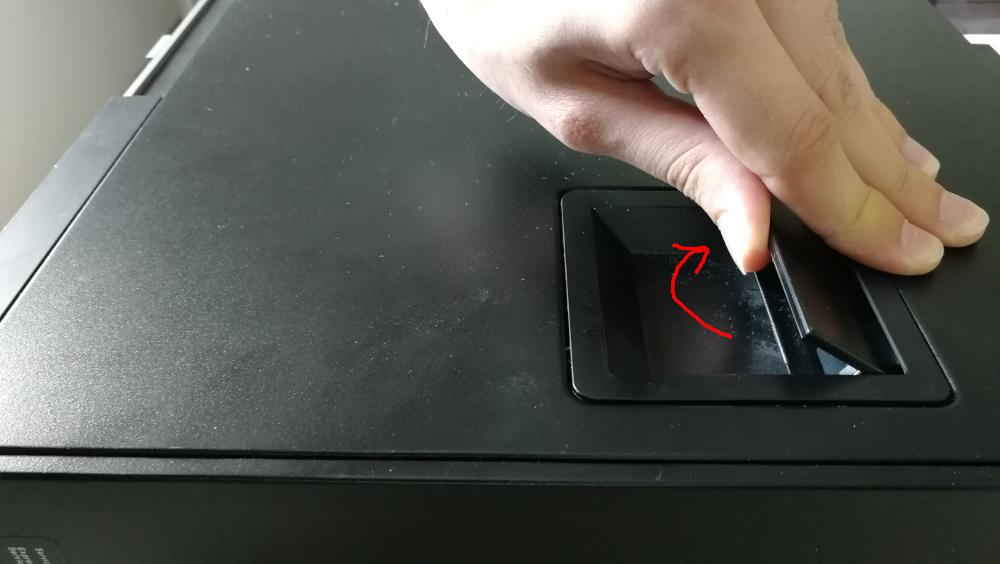
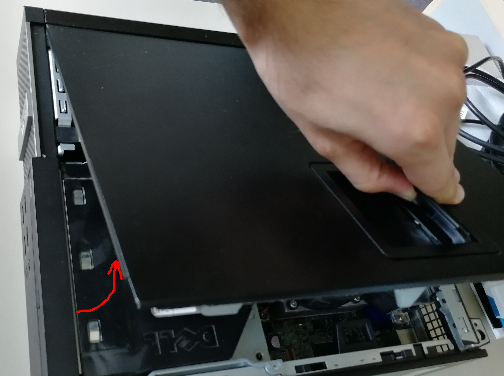
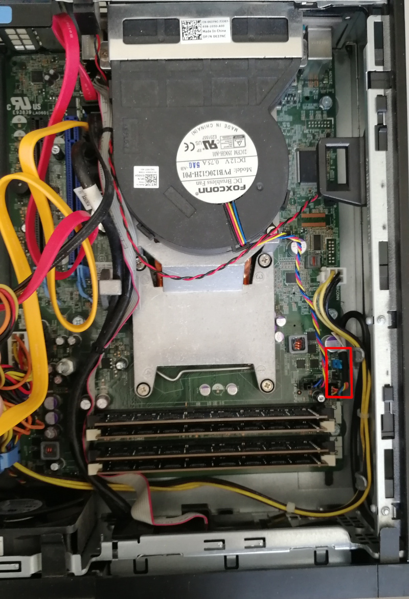
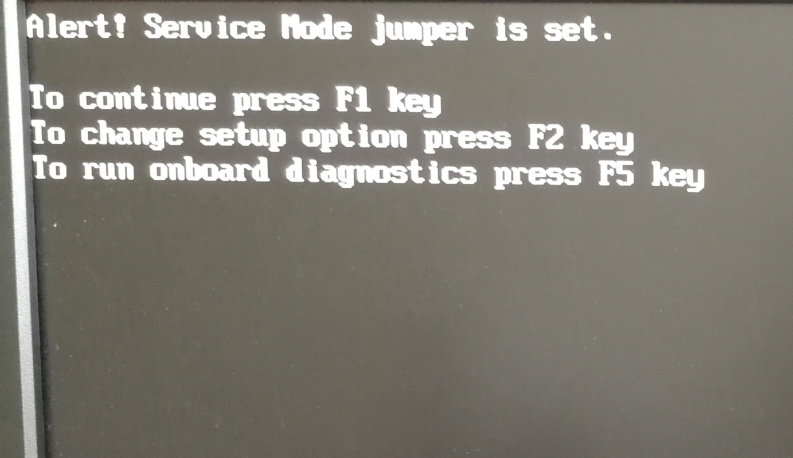
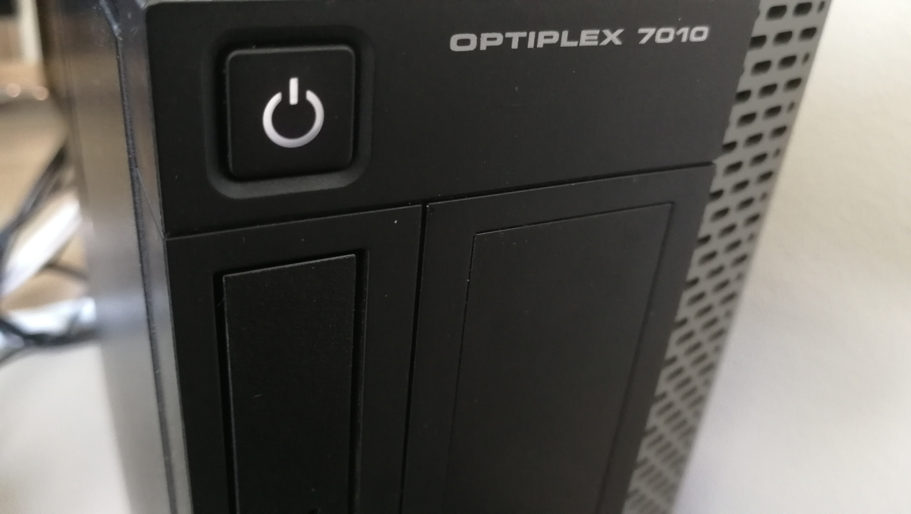

Initial deployment
Following documentation describe process of replacing original BIOS/UEFI firmware with Dasharo open-source firmware. Following procedure is supported for following models
| Vendor | Model |
|---|---|
| Dell | OptiPlex 7010 SFF |
| Dell | OptiPlex 7010 DT |
| Dell | OptiPlex 9010 SFF |
Hardware preparation
Flash descriptor security override
To perform any SPI NOR flash operations in presence of ME we have to put it in flash descriptor security override mode. Please follow below steps:
-
Open the case by lifting the handle on the case up.

-
Lift the whole top cover and take it off.

-
Now, it is time to release the disk dock. Lift up the handle of the CD/DVD drive bay.

-
Pull the CD/DVD drive bay to the CPU fan side.

-
Move the blue disk dock handle to the CPU fan side.

-
The screw should be at the more giant hole now. Lift up the whole dock to remove it.

-
When the dock is removed, the service mode jumper should be visible.

-
Place the jumper in the place marked by the red rectangle.

-
It should look like this.

-
Power on the machine. You should see a warning that the service jumper is active. Press F1 to proceed and boot to your Linux system.

OS booting
For simplicity we using network boot netboot.xyz from USB.
Boot system from USB:
- From section
ToolschooseUtilities (64-bit) - Then from section
netboot.xyz toolschooseKernel cmdline params - You should see prompt
Enter kernel cmdline parameters - Type:
iomem=relaxedand Enter - Use Esc to get back to netboot.xyz main menu
- From section
DistributionschooseLive CDs, thenDebian,Debian Live 11 (bullseye)andDebian 11 (Core)
NOTE: If trustworthiness of that solution is in question please note netboot.xyz can be self-hosted.
Flashrom installation
- Install flashrom v1.1 or newer with your distribution's package manager if you don't have it installed yet. If your distro doesn't provide flashrom or provides an outdated one, you can build it yourself using this instruction.
- Or compile recent version of flashrom:
sudo apt install libpci-dev libftdi-dev libusb-1.0-0-dev
git clone https://github.com/flashrom/flashrom.git
cd flashrom
sudo make install
BIOS backup
It is always good idea to backup original BIOS of your hardware, before switching to open-source firmware.
- Read content of SPI NOR flash:
sudo flashrom -p internal -r bios_backup_`date +%Y%m%d`.bin
flashrom v1.2-551-gf47ff31 on Linux 5.10.0-9-amd64 (x86_64)
flashrom is free software, get the source code at https://flashrom.org
Using clock_gettime for delay loops (clk_id: 1, resolution: 1ns).
Found chipset "Intel Q77".
Enabling flash write... SPI Configuration is locked down.
The Flash Descriptor Override Strap-Pin is set. Restrictions implied by
the Master Section of the flash descriptor are NOT in effect. Please note
that Protected Range (PR) restrictions still apply.
Enabling hardware sequencing due to multiple flash chips detected.
OK.
Found Programmer flash chip "Opaque flash chip" (12288 kB, Programmer-specific) mapped at physical address 0x0000000000000000.
Reading flash... done.
If you will face any issues please refer to troubleshooting section.
Get Dasharo
Download the Dell OptiPlex 7010/9010 Dasharo from release section or build from source.
Non-redistributable blobs
Some Dell OptiPlex 7010/9010 SFF binary blobs have unknown license or questionable redistributability. To avoid potential issues we transfer non-redistributable components from your original BIOS to Dell OptiPlex 9010 Dasharo binary using fwdeploy.
wget https://raw.githubusercontent.com/Dasharo/fwdeploy/main/run.sh
chmod +x run.sh
./run.sh <bios_backup> <dasharo_optiplex_9010_firmware>
After that procedure <dasharo_optiplex_9010_firmware> can be flashed on your
Dell OptiPlex 7010/9010 SFF.
NOTE: We gathering information about non-redistributable firmware components in Dasharo fwdeploy project. Feel free to report SHA256 of blobs from your platform.
Flashing
Following procedure will flash Dell OptiPlex 7010/9010 SFF Dasharo firmware to your machine SPI NOR flash.
Flash it on you Dell OptiPlex machine:
sudo flashrom -p internal --ifd -i bios -i me -w <dasharo_optiplex_9010_firmware>
for example:
sudo flashrom -p internal --ifd -i bios -i me -w /tmp/dasharo_workstation_v0.2_rc3.rom
flashrom v1.2-551-gf47ff31 on Linux 5.10.0-9-amd64 (x86_64)
flashrom is free software, get the source code at https://flashrom.org
Using clock_gettime for delay loops (clk_id: 1, resolution: 1ns).
Found chipset "Intel Q77".
Enabling flash write... SPI Configuration is locked down.
The Flash Descriptor Override Strap-Pin is set. Restrictions implied by
the Master Section of the flash descriptor are NOT in effect. Please note
that Protected Range (PR) restrictions still apply.
Enabling hardware sequencing due to multiple flash chips detected.
OK.
Found Programmer flash chip "Opaque flash chip" (12288 kB, Programmer-specific) mapped at physical address 0x0000000000000000.
Reading ich descriptor... done.
Using regions: "me", "bios".
Reading old flash chip contents... done.
Erasing and writing flash chip... Erase/write done.
Verifying flash... VERIFIED.
If you get a warning:
WARNING! You may be running flashrom on an unsupported laptop.
And programmer initialization failed, run command:
flashrom -p internal:laptop=this_is_not_a_laptop -w /tmp/dasharo_workstation_v0.2_rc3.rom --ifd -i bios -i me
If you have placed the jumper correctly, you should see the following message in flashrom's output:
The Flash Descriptor Override Strap-Pin is set. Restrictions implied by
the Master Section of the flash descriptor are NOT in effect. Please note
that Protected Range (PR) restrictions still apply.
A newer version of flashrom may not display the warning about unsupported chipset as it already may be marked as tested. Our team has verified that the flashrom updates firmware reliably on this chipset.
If you will face any issues please refer to troubleshooting section.
Verification
- If everything went well (flashrom has verified the flash content),
- Shut down machine, move the jumper to the original place
- Power on the machine.
- After rebooting, you should see the Dasharo Workstation logo when booting. When the logo appears, you may press Esc to select the boot device if you want to reboot from another source.
Troubleshooting
If you do not see the logo after few seconds, something probably went wrong, or a bug was hit. If the LED on the power button shines white, that means the platform booted correctly.

If the power button LED constantly shines in orange color, that means you have hit an error. The LED will start blinking soon.

If you see the logo and after that system does not starts (black screen), please take the following steps:
- Put a bootable USB stick to the USB port.
- Restart the computer using the power button.
- Press the Esc key to enter a boot menu.
- Choose a USB drive from the list.
- Re-install the operating system.
Common deployment problems you can find in FAQ.
Ubuntu installation
Ubuntu legacy installers have problems with graphical setup mode. When you see an error:
graphics initialization failed
Error setting up gfxboot
boot:_
You need a workaround to proceed with the installation. To boot the installer, simply
type live-install and press ENTER. It will boot to Ubuntu Live, and the
installer will be automatically launched.
Version affected: Dasharo Workstation v0.1.
If you see blinking yellow LED and black screen after reboot: 1. Unplug the power supply cable 2. Wait for 30s 3. Plug power supply again (machine should start automatically)
Bug reporting
If you encountered an error or bug, please fill report in Dasharo Issues repo.